Building software about the physical world. CS student at Santa Clara University. Most of these are live, and I keep them running.
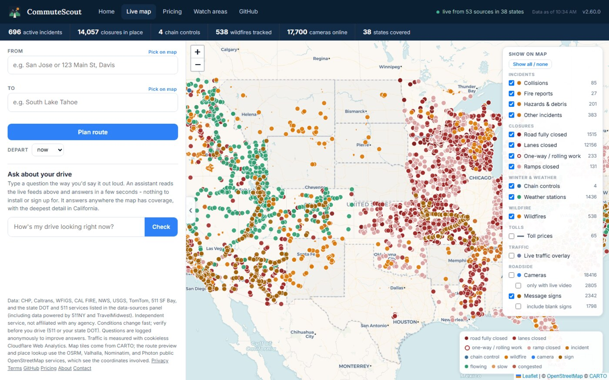
Live road conditions from 53 official agency feeds across 37 states: incidents, closures, chain controls, cameras, wildfire perimeters, and toll pricing. Map, route planner, and an assistant you can ask about a drive. Also an MCP server.
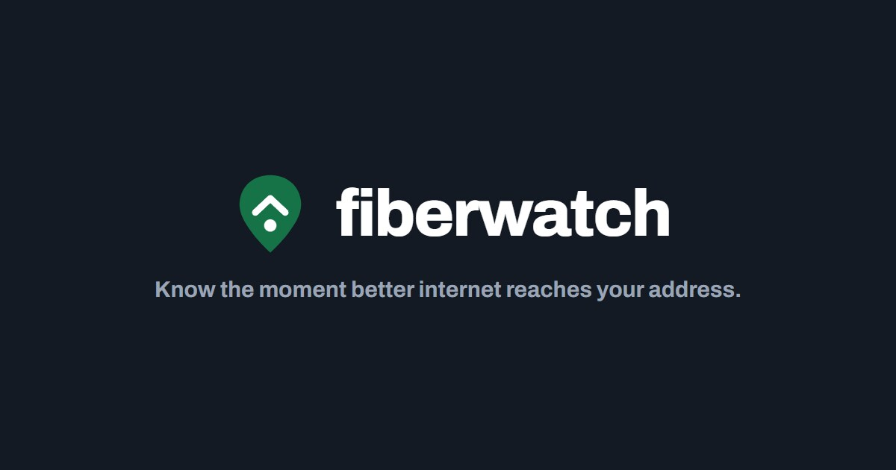
Type any US address and see every ISP that files coverage there, then get an email when something better arrives. Built on 49.1 million FCC records covering 2,067 providers.
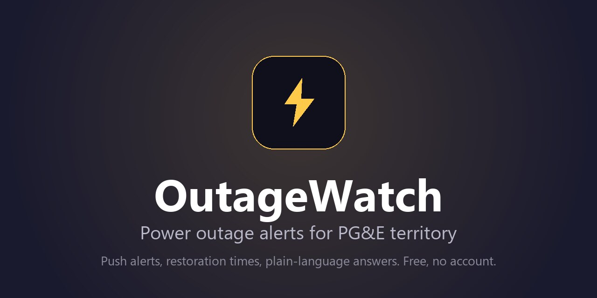
PG&E outage alerts with live restoration estimates, and plain-language answers instead of a utility status code.
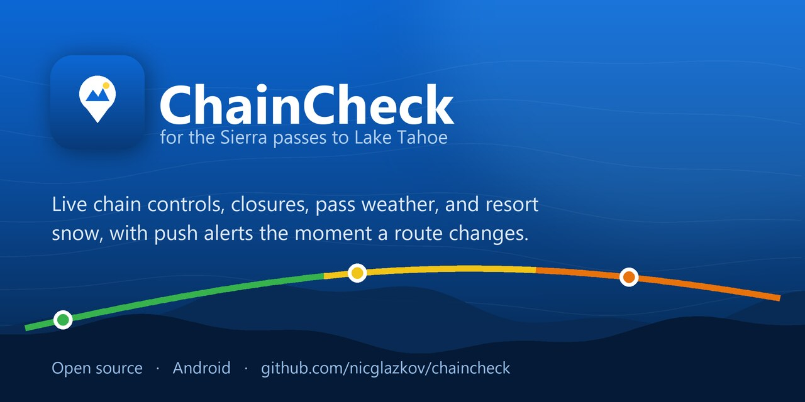
Tahoe winter driving in one app: live chain controls, closures, pass weather, and resort snow. The chain rules are tested code, not prose.
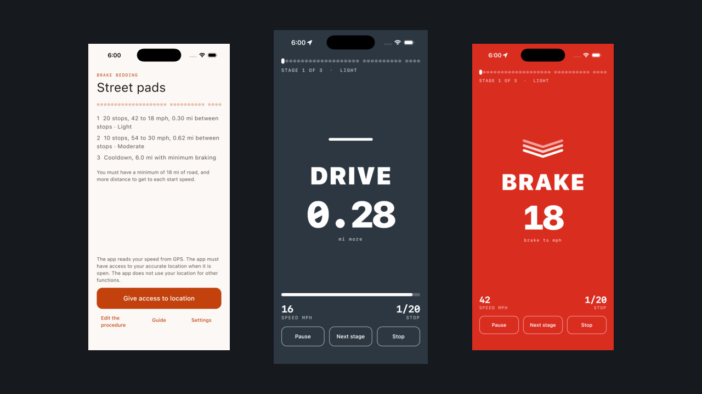
A brake bedding coach that talks you through new pads using live GPS speed. No network permission, no ads, no tracking.
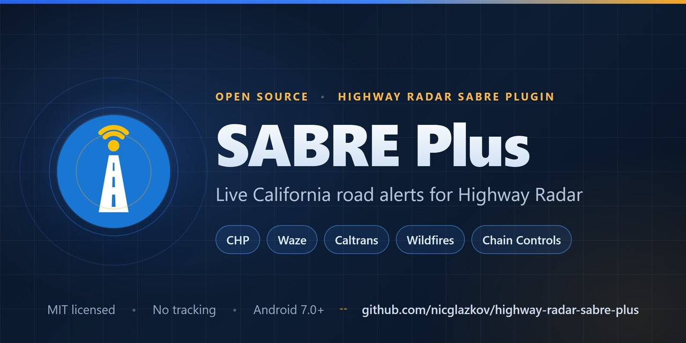
Five live road feeds on your Highway Radar map: CHP, Waze, Caltrans closures, wildfires, and chain controls.
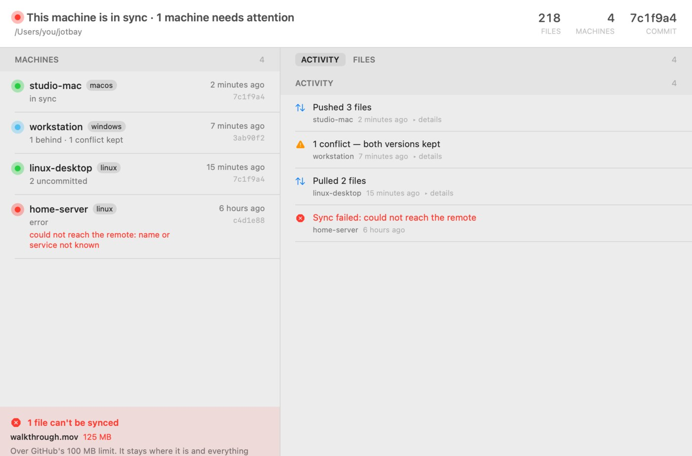
Keeps a folder of markdown notes in sync across every machine you use, through a private git repository you own.
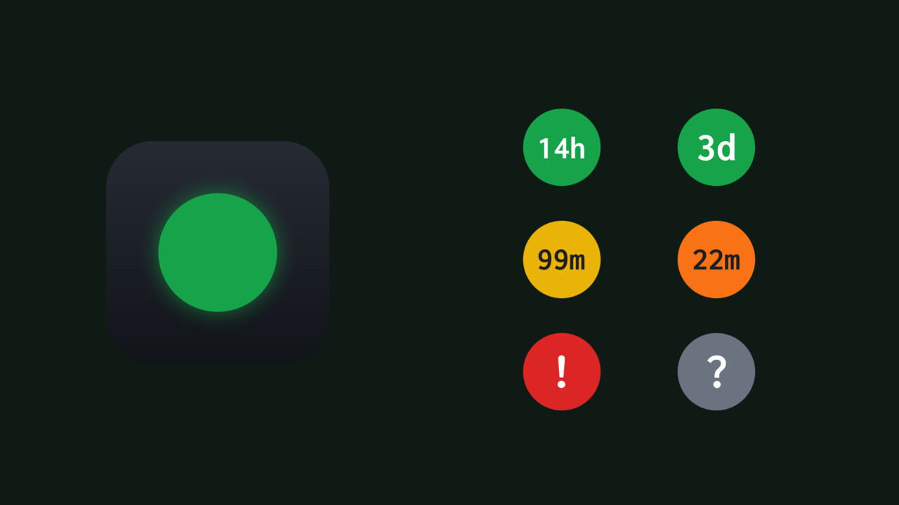
Know before your cloud session expires, not after your next command fails. It measures the session and learns how long yours last.
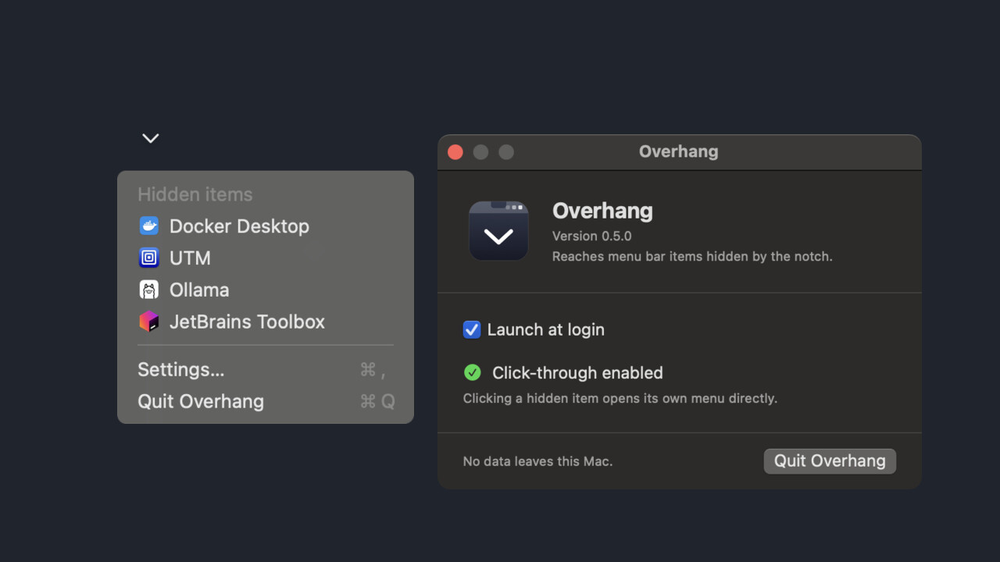
Recovers the menu bar icons macOS hides behind the notch. Under 2 MB, no private APIs, and no permissions at all.
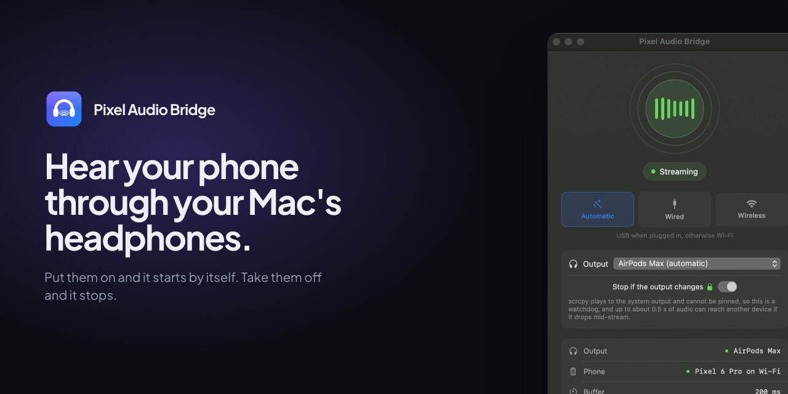
Hear your Android phone through the headphones already connected to your Mac. Put them on and it starts by itself.
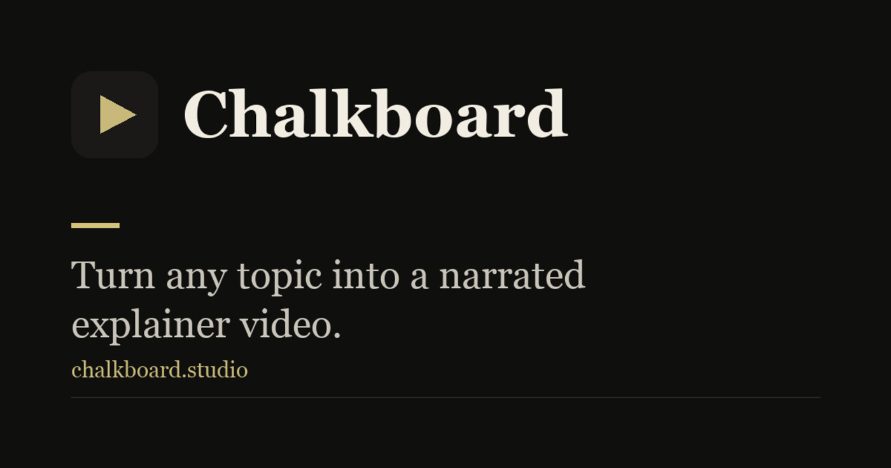
Turns any topic into a narrated explainer video through a pipeline that drafts, fact-checks, animates, and renders it. Open source; the hosted version is invite-only.
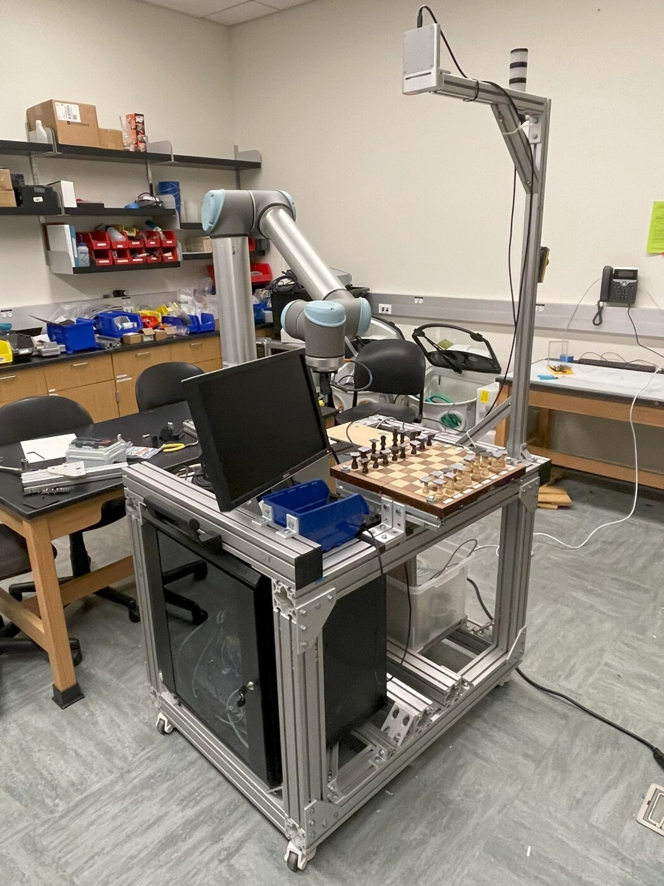
A written-off industrial arm that a few of us rebuilt to play chess. It has not lost to a human yet.